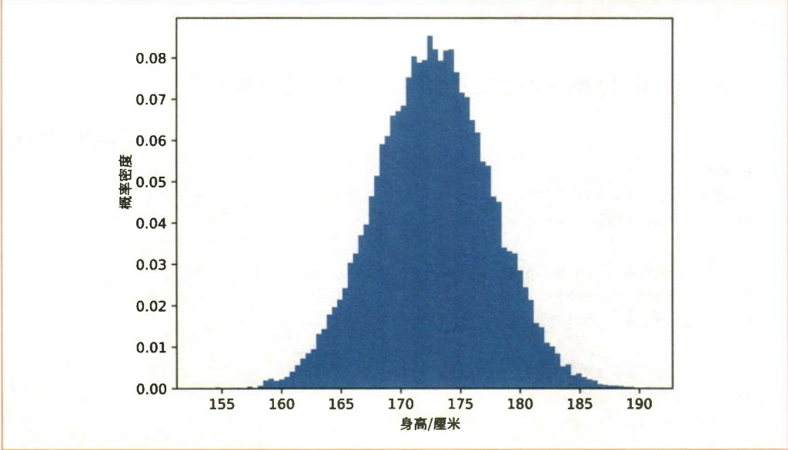
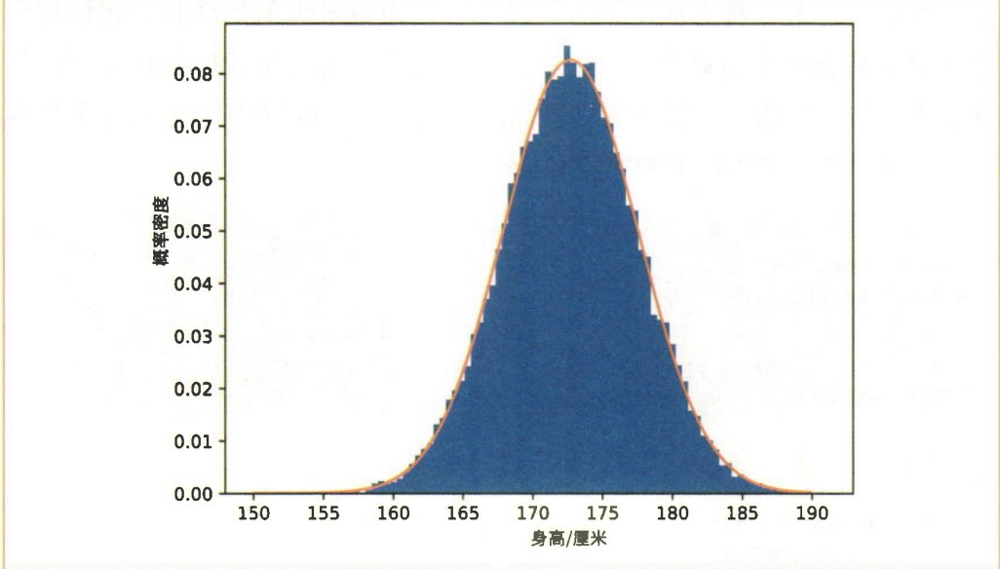
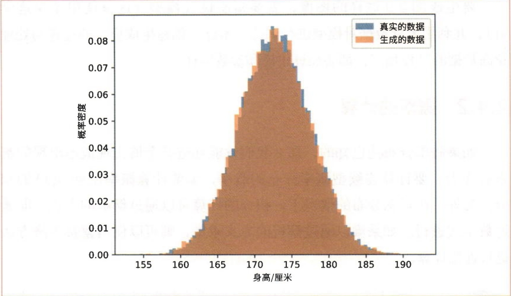

假设有一个概率分布，其形状由参数 \(\theta\) 决定。当参数为 \(\theta\) 时，获得数据 \(x\) 的概率密度为 \(p(x; \theta)\)。
对于正态分布，可以将参数视为 \(\theta = \{\mu, \sigma\}\)。
样本的概率密度
假设我们有一个样本 \(\mathcal{D} = \{x_1, x_2, \ldots, x_N\}\)，并且每个数据都是基于概率分布 \(p(x; \theta)\) 独立生成的。此时，获得样本 \(\mathcal{D}\) 的概率密度的数学式如下所示:
\[p(\mathcal{D}; \theta) = p(x_1; \theta) \cdot p(x_2; \theta) \cdot \ldots \cdot p(x_N; \theta) = \prod_{i=1}^{N} p(x_i; \theta)\]
由于假定每个数据是独立生成的，因此获得 \(N\) 个数据的概率密度等于每个数据的概率密度的乘积。\(p(\mathcal{D}; \theta)\) 表示当参数为 \(\theta\) 时获得样本 \(\mathcal{D}\) 的概率密度。
似然函数
这个 \(p(\mathcal{D}; \theta)\) 也可以被看作以 \(\theta\) 为参数的函数，其定义式如下所示:
\[L(\theta) = p(\mathcal{D}; \theta)\]
式子中的 \(L(\theta)\) 称为似然（likelihood）或似然函数（likelihood function）。似然是以参数 \(\theta\) 为参数的函数，表示在给定参数 \(\theta\) 的情况下，样本 \(\mathcal{D}\) 出现的概率密度。
最大似然估计是一种找到使似然 \(p(\mathcal{D}; \theta)\) 最大的参数 \(\theta\) 的技术。如果使似然最大的参数是 \(\hat{\theta}\)，那么当参数为 \(\hat{\theta}\) 时，观测到样本的概率最大。也就是说，当参数为 \(\hat{\theta}\) 时，模型最拟合样本。
对数似然
实际上，最大似然估计进行的是对数似然 \(\log p(\mathcal{D}; \theta)\) 的最大化，而不是直接最大化似然。这是因为:
\[\log(ab) = \log a + \log b\]
因此:
\[\log p(\mathcal{D}; \theta) = \log \left[\prod_{i=1}^{N} p(x_i; \theta)\right] = \sum_{i=1}^{N} \log p(x_i; \theta)\]
在求最大值时，导数非常重要。对于某些函数，最大值不一定在导数为 0 的地方。但对于 \(y = ax^2 + bx + c\) 这样的二次函数，如果二次项系数为负值（\(a < 0\)），那么最大值就在导数为 0 的地方。
因此，通过求解导数为 0 的方程可以求出取最大值的位置。这种方法称为“解析解”或“闭式（closed-form）求解”。
正态分布的概率密度函数为:
\[p(x; \mu, \sigma) = \frac{1}{\sqrt{2\pi} \cdot \sigma} \exp\left(-\frac{(x - \mu)^2}{2\sigma^2}\right)\]
其中: - \(\mu\) 是均值（mean） - \(\sigma\) 是标准差（standard deviation）
对于 \(N\) 个观测数据 \(\{x_1, x_2, \ldots, x_N\}\)，对数似然函数为:
\[\begin{aligned} \log p(\mathcal{D}; \mu, \sigma) &= \sum_{i=1}^{N} \log p(x_i; \mu, \sigma) \\ &= \sum_{i=1}^{N} \log \left[\frac{1}{\sqrt{2\pi} \cdot \sigma} \exp\left(-\frac{(x_i - \mu)^2}{2\sigma^2}\right)\right] \\ &= -N \log(\sqrt{2\pi}) - N \log \sigma - \frac{1}{2\sigma^2} \sum_{i=1}^{N} (x_i - \mu)^2 \end{aligned}\]
对 \(\mu\) 求导并令其等于 0:
\[\frac{\partial}{\partial \mu} \left[\log p(\mathcal{D}; \mu, \sigma)\right] = \frac{1}{\sigma^2} \sum_{i=1}^{N} (x_i - \mu) = 0\]
解得:
\[\hat{\mu} = \frac{1}{N} \sum_{i=1}^{N} x_i\]
对 \(\sigma\) 求导并令其等于 0:
\[\frac{\partial}{\partial \sigma} \left[\log p(\mathcal{D}; \mu, \sigma)\right] = -\frac{N}{\sigma} + \frac{1}{\sigma^3} \sum_{i=1}^{N} (x_i - \mu)^2 = 0\]
解得:
\[\hat{\sigma}^2 = \frac{1}{N} \sum_{i=1}^{N} (x_i - \hat{\mu})^2\]
\[\hat{\sigma} = \sqrt{\frac{1}{N} \sum_{i=1}^{N} (x_i - \hat{\mu})^2}\]
对于正态分布，通过最大似然估计可以得到:
均值的最大似然估计:样本均值
\[\hat{\mu} = \frac{1}{N} \sum_{i=1}^{N} x_i\]
标准差的最大似然估计:样本标准差
\[\hat{\sigma} = \sqrt{\frac{1}{N} \sum_{i=1}^{N} (x_i - \hat{\mu})^2}\]
这意味着，正态分布的最大似然估计就是样本的均值和标准差。这是一个非常直观的结果！
本节将使用真实的观测数据来实现生成模型。所使用的数据集是 SOCR Data。该数据集包含了 1993 年中国香港 18 岁青少年的身高数据，共计 25,000 条记录。不过，这些数据本身是基于实际调查结果虚构的。
为了方便使用，我们对这个身高数据集进行了整理，并将整理后的文件放在了code/ml/02文件夹下，文件名为 height.txt。
读取数据的代码示例:
import os
import numpy as np
import matplotlib.pyplot as plt
path = os.path.join(os.path.dirname(__file__), 'height.txt')
xs = np.loadtxt(path)
print(xs.shape) # (25000,)
plt.hist(xs, bins='auto', density=True)
plt.xlabel('Height [cm]')
plt.ylabel('Probability Density')
plt.show()通过读取得到的 xs 是包含 25,000 个元素的一维数组。如图1所示，观察直方图，我们发现它呈正态分布的形状。我们将身高的概率分布视为正态分布进行建模。

图1 身高数据集的直方图
接下来我们实现基于正态分布的生成模型。我们需要执行以下任务:
我们通过这两个任务来创建生成模型。我们已经完成了第一个任务——建模。接下来是第二个任务——参数估计。
计算样本的均值和标准差:
根据最大似然估计的理论，我们只需要计算样本的均值和标准差:
mu = np.mean(xs)
sigma = np.std(xs)
print(mu) # 172.78250853667997
print(sigma) # 4.830167473396299样本数据的均值可以通过 np.mean() 求得，标准差可以通过 np.std() 求得。上面的运行结果显示均值为 172.7…，标准差为 4.8…。这个均值和标准差是最拟合样本的参数。
可视化结果:
下面我们在之前的直方图上再画一张正态分布的图形:
def normal(x, mu=0, sigma=1):
"""正态分布的概率密度函数"""
y = 1 / (np.sqrt(2 * np.pi) * sigma) * np.exp(-(x - mu)**2 / (2 * sigma**2))
return y
x = np.linspace(150, 190, 1000)
y = normal(x, mu, sigma)
plt.hist(xs, bins='auto', density=True, alpha=0.7, label='Data')
plt.plot(x, y, 'r-', linewidth=2, label='Fitted Normal Distribution')
plt.xlabel('Height [cm]')
plt.ylabel('Probability Density')
plt.legend()
plt.show()从图2中可以看出，直方图与正态分布是相匹配的。

图2 身高数据集的直方图与正态分布
一旦我们估计出了正态分布的参数（\(\hat{\mu}\) 和 \(\hat{\sigma}\)），就可以使用这些参数来生成新的数据样本。这个过程称为采样（Sampling）。
从正态分布中采样的代码:
# 生成新的数据样本
n_samples = 1000
new_samples = np.random.normal(mu, sigma, size=n_samples)
# 可视化生成的数据
plt.hist(new_samples, bins='auto', density=True, alpha=0.7, label='Generated Samples')
plt.plot(x, y, 'r-', linewidth=2, label='Fitted Normal Distribution')
plt.xlabel('Height [cm]')
plt.ylabel('Probability Density')
plt.legend()
plt.show()从图3中可以看出，两个分布在大体上是重合的。我们的生成模型能够生成符合观测数据特征的新数据。这些新生成的数据应该具有与原始数据相似的特征，因为它们来自同一个估计的概率分布。

图3 身高数据的直方图（蓝色为真实的数据，橙色为生成的数据）
采样是生成模型的核心功能之一。通过采样，我们可以: